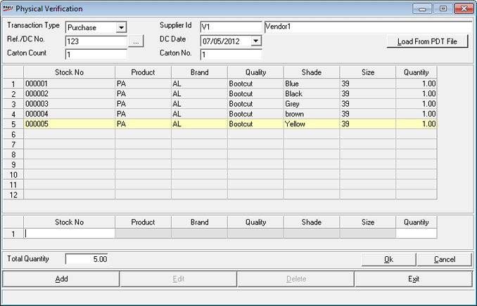

Physical Verification based on Stock No.
The Physical Verification – Add window is displayed
as shown.

Transaction Type:
Select the transaction type as Purchase,
Transfer In, Approval
Returns or Misc Rcpts.
Supplier Id:
Enter a HO/ Chain Store Location Id if the transaction type is Transfer
In. Similarly, enter the Vendor Id for Purchases, and for other types
of transactions enter Customer code or Vendor ID as the case may be. Alternatively,
you may press F2 to open the browse
window for making the required selection.
Ref/DC No.:
Enter or browse the supplier's dispatch document number which is typically
an Invoice Number or a Dispatch Challan Number.
Note: A Consignment
is identified by the combination of details such as Supplier
Id, Ref/DC No. and DC Date. Hence for all batches and
Goods Inwards, the same number is to be specified.
DC Date: Enter
the reference date. The date can be entered in dd/mm/yy
format or click on the drop-down button to open a calendar to select the
required date.
Carton Count:
Enter the number of cartons received at the store for physical verification.
Entry of value to this field is accepted only when entering the first
batch of physical verification for a given consignment.
Note: Once saved,
this count can not be altered.
Carton No.:
Enter a unique carton number for each batch of a document which acts as
its key.
Note: In case Enable Delivery from Remote Location
is set to 1-Yes in System Parameter,under
category Delivery Process, then
an additional field Location will
be available in the header section. Click
here to view the Physical Verification
window.
Note: Depending
on the set value of the parameter - Allow
PDT File Loading in Goods Inwards/Goods Outwards/Physical Verification,
a button named Load From PDT File
will be displayed on the right hand side of Carton
Number field.
Load
from PDT File: Click this option to load Item Details from Text file.
Size-wise Entry:
Check this box to switch the mode of entry from stock number mode to size-wise
mode or from size-wise mode to stock number mode.
Stock Number &
Quantity Grid: This window displays the stock numbers and quantities
recorded. The rows in the grid get added as and when new entries are added
through stock number and quantity text boxes.
Stock No.:
Enter the stock number or press F2
to view the Item Search window.
Select the stock number from the list and the grid in the Physical Verification
window gets populated with the details.
Quantity:
Enter the quantity depending on the value set for the parameter - Apply LSQ in Physical Verification.
If set, then as the stock number is recorded (or scanned), the quantity
is assumed to be Least Saleable Quantity
(usually 1) specified in the items master and a new row gets added to
the grid. Also, if Club Duplicate Items
parameter is set to ON, then if
the same stock number has been recorded earlier and added to the grid
as a row, the quantity in that row gets increased by least saleable quantity.
Total Quantity:
Displays the total quantity of all the stock numbers recorded. This is
for verifying the physical count of items in the batch.
Ok: To save the batch
Cancel: To clear the entries
Exit:
To quit this option